Mathematical Foundations of AI & ML
Unit 14: Explainability, Limits, and Trust
FAU Erlangen-Nürnberg
Title + Unit 14 positioning
- The final lecture of Mathematical Foundations of AI & ML. {.fragment}
- From physics-informed learning (Unit 13) to the question: can we trust our models? {.fragment}
- We synthesize the entire 14-unit arc into a coherent methodology for trustworthy ML. {.fragment}
Learning outcomes for Unit 14
By the end of this lecture, students can:
- explain why explainability is a scientific and industrial mandate, {.fragment}
- distinguish semantic structures (synonyms, taxonomies, ontologies), {.fragment}
- perform and interpret perturbation-based sensitivity analysis, {.fragment}
- assess where ML adds value in causal process chains and where it fails. {.fragment}
Why explainability is non-negotiable
- Science demands understanding, not just prediction — a model that cannot be questioned cannot be falsified. {.fragment}
- Industry demands accountability — engineers must justify decisions to stakeholders. {.fragment}
- Regulation demands transparency — EU AI Act requires explanations for high-risk AI systems. {.fragment}
- Explainability is not optional — it is a prerequisite for deploying ML in engineering. {.fragment}
The black-box problem
- Deep neural networks achieve remarkable accuracy but offer no explanation for individual predictions. {.fragment}
- A model predicting “this alloy will fail” without explaining why is unacceptable for safety-critical decisions. {.fragment}
- Engineers need to know which factors drive the prediction and how confident the model is. {.fragment}
- The black-box problem motivates the entire field of explainable AI (XAI) [@neuer2024machine]. {.fragment}
Explainability vs interpretability
Interpretability
- The model itself is transparent and understandable. {.fragment}
- Examples: linear regression, decision trees, small rule sets. {.fragment}
Explainability
Post-hoc methods that reveal the reasoning of complex models. {.fragment}
Examples: SHAP values, sensitivity analysis, attention visualization. {.fragment}
Trade-off: interpretable models may be less accurate; explainability adds complexity to accurate models. {.fragment}
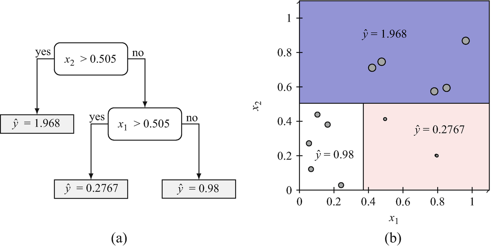
Who needs explanations?
- Scientists: full understanding (all levels) — to build knowledge. {.fragment}
- Engineers: process and prediction level — to make decisions. {.fragment}
- Regulators: data provenance and prediction justification — to ensure compliance. {.fragment}
- Operators: actionable recommendations — to adjust process parameters. {.fragment}
- Different audiences need different types and depths of explanation. {.fragment}
The cost of unexplainability
- Rejected by regulators (cannot approve what cannot be explained). {.fragment}
- Distrusted by domain experts (they will use their own judgment instead). {.fragment}
- Impossible to debug (when predictions fail, no path to diagnosis). {.fragment}
- Liability risk (who is responsible when an unexplained model causes harm?). {.fragment}
Explainability as scientific method
- Science progresses by proposing models, deriving predictions, and testing them. {.fragment}
- A model that cannot be questioned cannot be falsified — it fails Popper’s criterion. {.fragment}
- ML models that only predict without explanation are tools, not science. {.fragment}
- Making ML explainable elevates it to a scientific methodology. {.fragment}
Course context
- Every unit has built toward this moment: {.fragment}
- Loss minimization (Unit 1): what does the model optimize? {.fragment}
- Generalization (Unit 8): does it work on new data? {.fragment}
- Uncertainty (Unit 12): how confident is it? {.fragment}
- Physics (Unit 13): does it respect known laws? {.fragment}
- Explainability (Unit 14): can we understand and trust it? {.fragment}
Roadmap of today’s 90 min
- 10–25 min: Semantic structures — digitizing meaning. {.fragment}
- 25–40 min: Six levels of explainability (E1–E6). {.fragment}
- 40–55 min: Sensitivity analysis — perturbation and beyond. {.fragment}
- 55–65 min: Causality in process chains. {.fragment}
- 65–75 min: Data manifold limits and trust. {.fragment}
- 75–87 min: Course retrospective — the 14-unit arc. {.fragment}
Digitizing meaning: the challenge
- ML models operate on numbers (tensors, vectors, matrices). {.fragment}
- Domain knowledge is encoded in language and relationships. {.fragment}
- Bridging this gap requires semantic structures that formalize meaning. {.fragment}
- Without semantic structures, models cannot be grounded in domain understanding [@neuer2024machine]. {.fragment}
Synonyms and controlled vocabularies
- Different terms for the same concept: “yield strength” = “elastic limit” = “\(R_e\)”. {.fragment}
- Controlled vocabulary: a standardized list of terms with defined meanings. {.fragment}
- Without synonym resolution, models may treat the same property as two separate features. {.fragment}
- First step in any data integration pipeline. {.fragment}
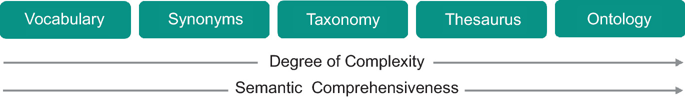
Taxonomies: hierarchical classification
- Organize concepts in parent-child hierarchies: {.fragment}
- Material > Metal > Steel > Stainless Steel > 316L. {.fragment}
- Taxonomies enable inheritance: properties of “Metal” apply to all sub-categories. {.fragment}
- They structure domain knowledge and guide feature selection. {.fragment}
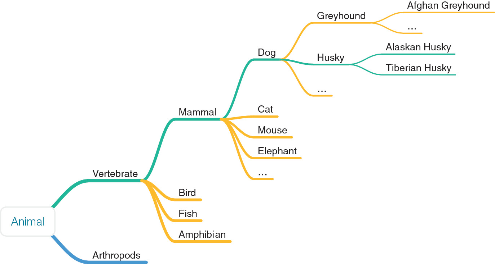
Ontologies: structured knowledge graphs
- An ontology defines concepts, relationships, and constraints: {.fragment}
- “Alloy hasProperty tensileStrength” {.fragment}
- “tensileStrength measuredIn MPa” {.fragment}
- “grainSize affects yieldStrength” {.fragment}
- Richer than taxonomies: capture arbitrary relationships, not just hierarchies. {.fragment}
Why ontologies matter for ML
- Enable deductive reasoning: if the model’s prediction violates a known ontological relationship, flag it. {.fragment}
- Guide feature engineering: ontological relationships suggest which features to include. {.fragment}
- Support consistency checking: predictions must be consistent with domain constraints. {.fragment}
- Provide a framework for communicating model behavior to domain experts. {.fragment}
Ontologies for feature engineering
- Ontological relationships encode domain knowledge about what matters: {.fragment}
- “Composition determines phase” → include composition features. {.fragment}
- “Processing affects microstructure” → include processing parameters. {.fragment}
- This connects to Unit 13 (physics-informed learning): ontologies formalize the physics knowledge. {.fragment}
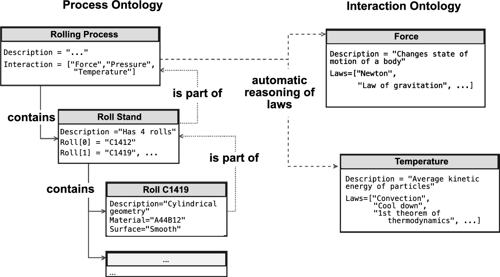
Materials ontology example
- Causal chain: Composition \(\) Processing \(\) Microstructure \(\) Properties. {.fragment}
- This is a process ontology — each arrow represents a physical mechanism. {.fragment}
- Models should respect this chain: predicting properties from composition is valid; the reverse is an ill-posed inverse problem. {.fragment}
Checkpoint: semantic structures
- Question: Your model uses “hardness” and “HRC” as separate features. What semantic issue exists?
- Answer: They are synonyms — “HRC” is the Rockwell C hardness scale, a measure of “hardness”. Including both double-counts the same information and may confuse the model.
The six levels of explainability (E1–E6)
- A structured framework for matching explanation depth to audience and purpose.
- Each level addresses a different question about the model and its predictions.
- Comprehensive explainability requires addressing all six levels.
- Not every audience needs every level — match the explanation to the recipient [@neuer2024machine].
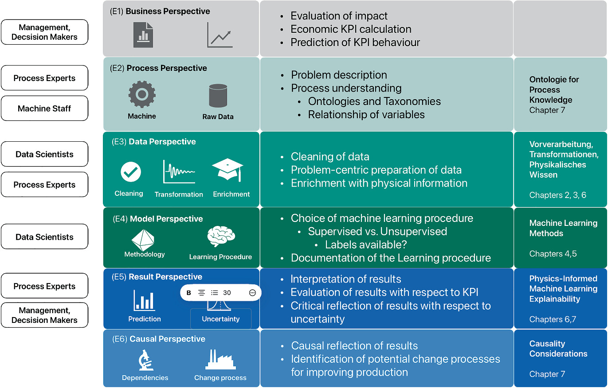
E1: Data level
- Question: “What data was used?” {.fragment}
- Covers: data provenance, quality, completeness, representativeness, biases. {.fragment}
- Why it matters: a model is only as good as its data — garbage in, garbage out. {.fragment}
- Output: data documentation, distribution plots, missing data reports. {.fragment}
E2: Process level
- Question: “What physical process does this model relate to?” {.fragment}
- Covers: the engineering context, the physical system, the measurement setup. {.fragment}
- Why it matters: predictions must be interpreted in the context of the physical process. {.fragment}
- Output: process flow diagrams, variable definitions, physical constraints. {.fragment}
E3: Feature level
- Question: “Which input features matter most?” {.fragment}
- Covers: feature importance, feature selection rationale, sensitivity analysis. {.fragment}
- Why it matters: identifies which measurements drive predictions — guides data collection and process control. {.fragment}
- Output: feature importance rankings, sensitivity plots. {.fragment}
E4: Model level
- Question: “How does the model work?” {.fragment}
- Covers: architecture description, hyperparameter choices, training protocol, convergence diagnostics. {.fragment}
- Why it matters: enables reproduction, debugging, and comparison with alternative models. {.fragment}
- Output: model documentation, training curves, architecture diagrams. {.fragment}
E5: Prediction level
- Question: “Why this specific prediction?” {.fragment}
- Covers: local explanations for individual predictions. {.fragment}
- Methods: SHAP (Shapley values), Integrated Gradients, perturbation analysis. {.fragment}
- Output: “This sample is predicted high-strength because carbon content is high and grain size is small.” {.fragment}
E6: Decision level
- Question: “What action should be taken?” {.fragment}
- Covers: mapping predictions to actionable recommendations with confidence. {.fragment}
- Why it matters: the ultimate purpose of the model is to inform decisions. {.fragment}
- Output: “Increase sintering temperature by 20°C (confidence: 85%).” {.fragment}
Matching level to audience
| Audience | Primary levels | Example explanation |
|---|---|---|
| Operator | E2 + E6 | “Adjust temperature; model is 90% confident” |
| Data scientist | E3 + E4 | “Feature X has highest SHAP value; 3-layer MLP” |
| Regulator | E1 + E5 | “Data from 500 samples; prediction driven by grain size” |
| Scientist | All | Full documentation and methodology |
- Different stakeholders require different depth and focus.
- Explanations must be tailored to the user’s technical background and decision-making needs.
Perturbation-based sensitivity analysis
- Perturb one input feature by \(\); observe the change in output:
\[ S_j = \frac{|f(\mathbf{x} + \Delta \mathbf{e}_j) - f(\mathbf{x})|}{|\Delta|} \]
- High sensitivity: the output changes strongly when this feature is perturbed.
- Low sensitivity: the feature has little effect on the prediction.
- Simple, model-agnostic, and intuitive.
Global vs local sensitivity
- Global sensitivity: average \(S_j\) across many data points — which features matter on average.
- Local sensitivity: \(S_j\) at a specific point — which features matter for this prediction.
- Global sensitivity guides feature selection; local sensitivity explains individual predictions.
Sensitivity analysis in practice
- Vary each feature by \(%\) (or \(\)) while holding others constant.
- Record the output change for each perturbation.
- Rank features by average output sensitivity.
- Visualize as a bar chart: “tornado plot” showing feature sensitivities.
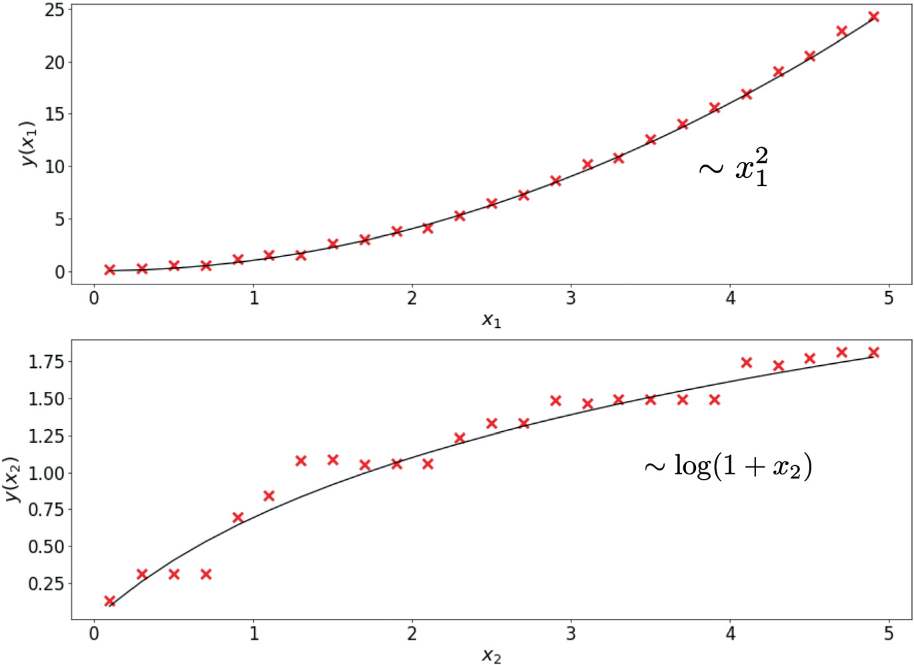
Feature importance from sensitivity
- High sensitivity \(\) important feature — changes in it strongly affect predictions.
- Low sensitivity \(\) unimportant feature — can potentially be removed.
- But: sensitivity alone does not imply causation — it reveals association.
- Combine with domain knowledge to interpret importance.
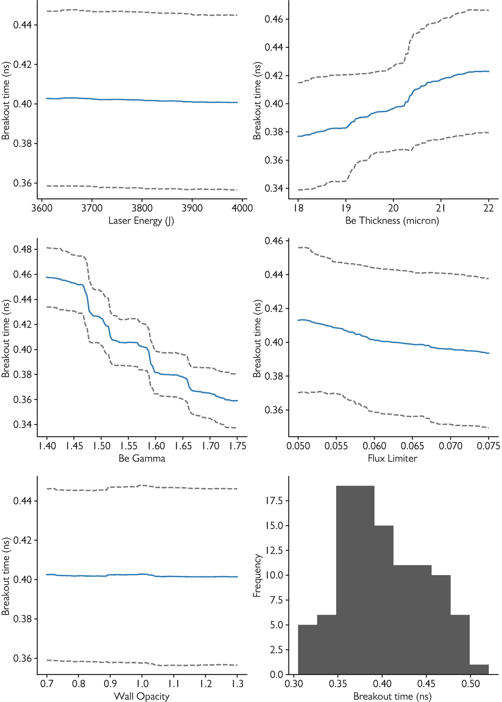
Sensitivity analysis: limitations
- Assumes independence: one-at-a-time perturbation misses feature interactions.
- Linear approximation: sensitivity at one point may not represent the full landscape.
- No causal information: sensitivity shows association, not mechanism.
- For interactions: use Sobol indices or SHAP (more expensive, more informative).
Beyond perturbation: SHAP values (brief)
- SHAP (SHapley Additive exPlanations): allocates prediction contribution to each feature using game theory.
- Based on Shapley values: fair allocation of the “payout” (prediction) to “players” (features).
- Accounts for feature interactions.
- Computationally expensive but provides the most principled feature attribution.
SHAP waterfall plot — explaining one prediction
- A waterfall plot decomposes a single prediction into per-feature contributions.
- Starting from the expected model output \(\mathbb{E}[f(x)]\), each bar adds or subtracts the SHAP value of one feature.
- Red bars push the prediction higher; blue bars push it lower.
- The final value at the top is the model output for that instance [@lundberg2017unified].

SHAP beeswarm plot — global feature importance
- A beeswarm plot summarises SHAP values across the entire dataset.
- Each dot is one data point; the x-axis shows the SHAP value (impact on prediction).
- Colour encodes the feature value (red = high, blue = low).
- Features are ranked by mean |SHAP|, giving a global importance ranking with local detail [@lundberg2017unified].
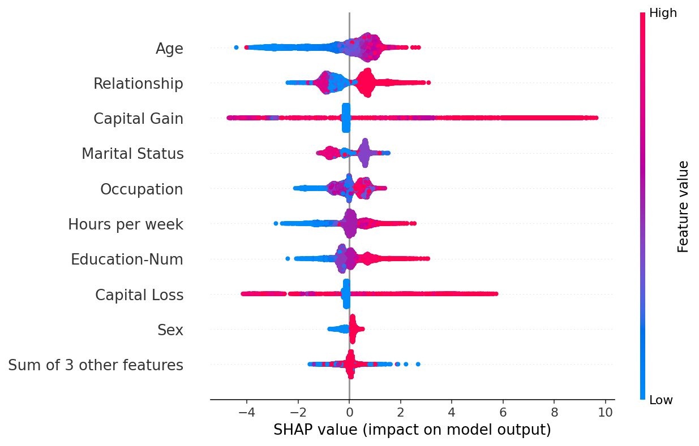
Integrated Gradients: attributing deep network predictions
- Integrated Gradients (Sundararajan et al. 2017): attributes a prediction to each input pixel by integrating gradients along a straight path from a baseline (black image) to the input.
- Satisfies two key axioms: Sensitivity (if input and baseline differ only in one feature, it receives non-zero attribution) and Implementation Invariance (functionally identical networks get the same attribution) [@sundararajan2017axiomatic].
- Visualised as pixel-level heatmaps: positive attributions highlight features supporting the predicted class.
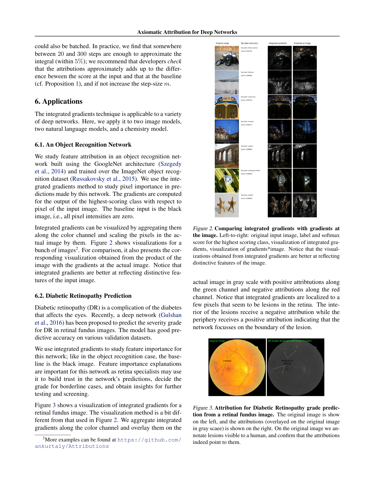
Mechanistic interpretability: reverse-engineering what a network actually learned
From attribution to internals
- SHAP and Integrated Gradients tell you which input features mattered for one prediction — an input-side view.
- Mechanistic interpretability asks a different question: what computation does this layer perform, and in what basis? It looks inside the network.
- For transformers, the residual stream is the natural object of study: every layer reads from it and writes to it. Treat it as the “thought-process bus” of the model.
Two ideas you should know
- Superposition [@elhage2022superposition]: networks store more features than they have neurons by overlapping them in directions that are not axis-aligned. Single neurons are usually polysemantic — they fire for many unrelated concepts.
- Sparse autoencoders (SAEs) [@bricken2023sparseae; @templeton2024scaling]: train a sparse-coding autoencoder on layer activations to recover an over-complete basis of monosemantic directions. Each SAE feature is an interpretable concept (e.g. “Golden Gate Bridge”, “buggy Python code”). Anthropic’s Scaling Monosemanticity (2024) extracted millions of such features from production Claude models.
- Status in 2026: SAE-based feature extraction is the dominant interpretability research direction for foundation models. Still emerging for vision/materials; a forward-looking topic, not yet a production tool. {.fragment}
Causality vs correlation
- ML models find correlations: features that co-occur with the output.
- But correlation \(\) causation: confounders can create spurious patterns.
- Example: ice cream sales correlate with drowning rates (confounder: temperature).
- Causal claims require interventional data or domain knowledge.
Causal process chains
- In manufacturing: Composition \(\to\) Processing \(\to\) Microstructure \(\to\) Properties.
- The arrow direction encodes causation: changing composition causes different microstructure.
- ML can model these links, but the causal direction is known from physics, not learned from data [@neuer2024machine].
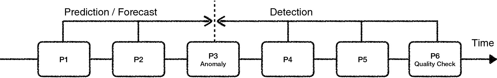
Detection vs prediction
- Detection: “This sample has low hardness” — pattern recognition from measurements. ML excels here.
- Prediction: “Changing carbon content will increase hardness” — causal claim. Requires causal model.
- Most ML models perform detection (interpolation). Prediction (extrapolation with causal claims) requires more.
Where ML adds value in causal chains
- Within the training distribution: ML provides fast, accurate detection and interpolation.
- At the boundaries: uncertainty quantification (Unit 12) flags unreliable predictions.
- Beyond the distribution: causal models (physics, experiments) are needed.
- ML is most valuable when combined with domain knowledge, not as a replacement for it.
Deductive reasoning with ontologies
- If the ontology states “grain size affects yield strength” but the model assigns zero importance to grain size:
- Either the data lacks variation in grain size, or
- The model has a problem.
- Ontological consistency checking catches such issues automatically.
- This connects explainability to domain validation.
Checkpoint: causality
- Question: Your model finds that ice cream sales predict drowning rates. What’s the issue?
- Answer: Confounding variable — temperature causes both. The model found a correlation, not a causal relationship.
Data manifold limits
- ML models are only reliable within the data manifold (training distribution).
- Extrapolation: predicting outside the training range is unreliable — the model has no information there.
- Detection: use latent space density (Unit 9), reconstruction error (Unit 5), GP uncertainty (Unit 12).
- Never trust predictions in regions where the model has not seen data.
Counterfactual explanations: “what if?”
- A counterfactual explanation answers: “what is the smallest change to the input that would flip the prediction?”
- Example: “Your loan was denied. If your income were €5 000 higher and your debt €2 000 lower, it would be approved.”
- Counterfactuals are actionable: they tell users what to change, not just what mattered.
- DiCE (Mothilal et al. 2020) generates diverse counterfactuals so users see a range of valid alternatives [@mothilal2020explaining].
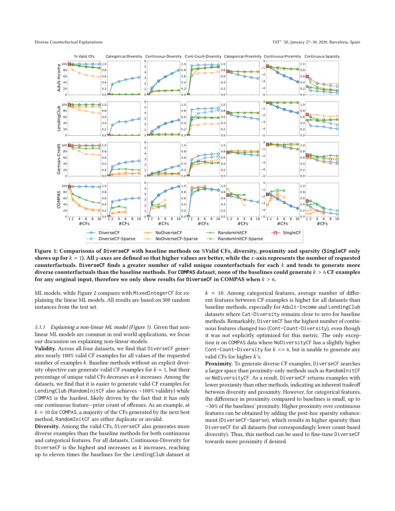
Fairness and bias in ML predictions
- ML models can perpetuate or amplify societal biases present in training data.
- Equalized odds (Hardt et al. 2016): a predictor is fair if it has equal true-positive and false-positive rates across protected groups (e.g. race, gender).
- Equal opportunity: the weaker condition of equal true-positive rates only.
- Figure 1 shows the ROC polytope of achievable (FPR, TPR) pairs per group — fairness requires operating at the same point on both group-specific ROC curves [@hardt2016equality].
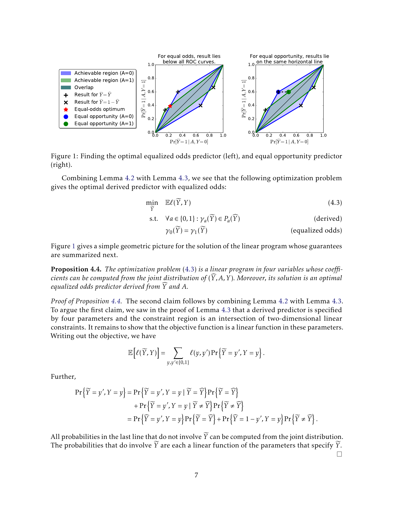
Detecting extrapolation
- Latent space density (Unit 9): low density = far from training data = potential extrapolation.
- Reconstruction error (Unit 5 autoencoders): high error = input differs from learned patterns.
- GP uncertainty (Unit 12): wide uncertainty bands = no nearby training data.
- Ensemble disagreement: models disagree = uncertain = possible extrapolation.
Out-of-distribution detection: baseline approach
- Hendrycks & Gimpel (2017): the maximum softmax probability is a surprisingly effective OOD score.
- In-distribution examples typically produce high maximum softmax probabilities; OOD examples produce lower values.
- The method requires no modification to the trained network — only the softmax output at test time.
- AUROC (area under the ROC curve) measures detection quality: random = 50%, perfect = 100%.
- Limitation: softmax probabilities can be overconfident for OOD inputs far from the training manifold [@hendrycks2017baseline].
Inductive bias and trust
- Every model has inductive bias — assumptions built into the model structure.
- Linear model: assumes linear relationships. NN: assumes smooth functions (spectral bias).
- Trust requires understanding what the model assumes and testing where those assumptions fail.
- Physics-informed models (Unit 13) make their assumptions explicit — a trust advantage.
When models should NOT be trusted
- Extrapolation beyond the training distribution.
- Confounded features where correlation \(\) causation.
- Insufficient training data (high epistemic uncertainty).
- Missing physics (model violates known constraints).
- Poor calibration (predicted confidence does not match observed accuracy).
Building trustworthy ML systems
- Uncertainty quantification (Unit 12): know what you don’t know.
- Explainability (Unit 14): understand why predictions are made.
- Domain validation: check predictions against physical knowledge.
- Human oversight: experts review critical predictions.
- Trustworthy ML = the combination of all four.
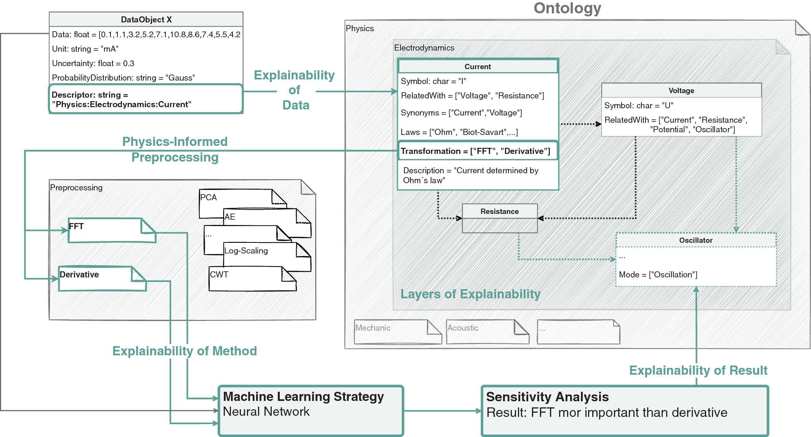
Course retrospective: the 14-unit arc
- This course has been a journey from “what is learning?” to “can we trust what the model learned?”
- Each unit built on the previous, creating a coherent methodology for engineering ML.
%%| echo: false
%%| fig-align: center
graph TD
subgraph Foundations
U1["Unit 1: Learning vs Data Analysis"]
U2["Unit 2: Linear Algebra, PCA/SVD"]
U3["Unit 3: Regression as Loss Minimization"]
U4["Unit 4: Neural Networks"]
end
subgraph Optimization_Probability ["Optimization & Probability"]
U5["Unit 5: Clustering & Autoencoders"]
U6["Unit 6: Loss Landscapes & Optimization"]
U7["Unit 7: Probabilistic View"]
end
subgraph Generalization_Models ["Generalization & Modern Models"]
U8["Unit 8: Generalization & Bias-Variance"]
U9["Unit 9: Latent Spaces & SSL"]
U10["Unit 10: Attention & Transformers"]
U11["Unit 11: Generative — VAE & Diffusion"]
end
subgraph Trust
U12["Unit 12: Uncertainty in Predictions"]
U13["Unit 13: Physics-Informed Learning"]
U14["Unit 14: Explainability & Trust"]
end
Foundations --> Optimization_Probability
Optimization_Probability --> Generalization_Models
Generalization_Models --> Trust- Let us review the arc.
Units 1–4: Foundations
- Unit 1: Learning vs data analysis — models, loss functions, the empirical-risk picture.
- Unit 2: Linear algebra — PCA / SVD, covariance, eigendecomposition.
- Unit 3: Regression as loss minimization — analytic and iterative solutions.
- Unit 4: Neural network architectures — from neurons to CNNs.
Units 5–7: Representation, optimization, probability
- Unit 5: Clustering & autoencoders — K-means / GMM / EM, PCA as a linear AE, non-linear AE bottleneck.
- Unit 6: Loss landscapes & optimization — momentum, Adam(W), Lion, Sophia, Schedule-Free.
- Unit 7: Probabilistic view — MLE, Bayesian inference, MAP, KL, conformal prediction.
Units 8–11: Generalization, latent, attention, generative
- Unit 8: Generalization & bias-variance — regularization, CV, tree ensembles.
- Unit 9: Latent spaces & advanced representation — t-SNE, UMAP, MAE / DINOv2 / I-JEPA.
- Unit 10: Attention & transformers — ViT, Flash Attention, MoE, SSM/Mamba.
- Unit 11: Generative models — VAEs, diffusion, flow matching, consistency models.
Units 12–14: Uncertainty, physics, and trust
- Unit 12: Uncertainty quantification — GPs, MC Dropout, ensembles.
- Unit 13: Physics-informed learning — PINNs, data enrichment, Lagaris.
- Unit 14: Explainability and trust — the culmination.
Exam-aligned summary: 10 course-wide must-know statements
- Learning = minimizing [ expected | empirical ] risk; [ empirical | validation ] risk is the tractable proxy. {.fragment}
- The bias-variance tradeoff governs [ model complexity | dataset size ] selection. {.fragment}
- Backpropagation enables efficient gradient computation in [ \(O(W)\) | \(O(W^2)\) ]. {.fragment}
- Regularization [ restricts | expands ] hypothesis space to improve generalization. {.fragment}
- Bayesian inference provides principled uncertainty quantification via the [ likelihood | posterior ]. {.fragment}
- Autoencoders learn compressed representations; linear AE = [ PCA | K-Means ]. {.fragment}
- The EM algorithm iteratively finds [ ML | MAP ] parameters for mixture models. {.fragment}
- GP uncertainty grows [ towards | away from ] data — honest epistemic uncertainty. {.fragment}
- PINNs embed physics into the [ loss | architecture ] to reduce data requirements. {.fragment}
- Explainability is a [ mandate | luxury ], not an optional add-on. {.fragment}
Exam preparation and farewell
- Exam scope: Units 1–14. Focus on derivations (MLE, backprop, bias-variance, EM, GP posterior).
- Preparation: work through all exercise problems; understand the “10 must-know statements” per unit.
- Format: written exam — derivations, interpretations, design questions.
- Thank you for an excellent semester. Good luck with the exam!